Fennica
To search Fennica data in Finna
library(finna)
fennica <- search_finna("*",filters=c('collection:"FEN"'))
print(fennica)## # A tibble: 100 × 9
## id Title Author Year Language Formats Subjects Library Series
## <chr> <chr> <chr> <chr> <chr> <chr> <chr> <chr> <chr>
## 1 3amk.39381 Teknologia… Markk… 2003 fin Kirja,… teknolo… 3AMK-k… Edusk…
## 2 3amk.55142 Työsuojelu… Sanas… 2006 fin Kirja,… Diction… 3AMK-k… TSK
## 3 3amk.62039 Terveyden … Kiisk… 2008 fin Kirja,… alkohol… 3AMK-k… Sosia…
## 4 3amk.62695 Nuorten te… Rimpe… 2007 fin Kirja,… altistu… 3AMK-k… Sosia…
## 5 3amk.66893 Mahdollisu… Holma… 2008 fin Kirja,… Turun a… 3AMK-k… Turun…
## 6 3amk.68989 Mini-inter… Seppä… 2008 fin Kirja,… Communi… 3AMK-k… Sosia…
## 7 3amk.69050 Pysytään t… Suomi… 2008 fin Kirja,… vajaaku… 3AMK-k… Sosia…
## 8 diana.90230 Tulevaisuu… Lampi… 2009 fin Kirja,… kotital… Diakon… Opetu…
## 9 3amk.70767 Kaupunkilu… Laine… 2009 fin Kirja,… kaupunk… 3AMK-k… Tutki…
## 10 diana.96117 Suomalaise… Helak… 2011 fin Kirja,… terveys… Diakon… Rapor…
## # ℹ 90 more rowsBulk data
In order to download the whole data we can add the parameter
limit = Inf as
search_finna("*",filters=c('collection:"FEN"'), limit = Inf)
Checking the total counts
search the whole data and it total search of counts in the the interval between some years for example between the years 1809-1917 as follows:
library(finna)
fennica <- search_finna("*",filters = c('collection:"FEN"', 'search_daterange_mv:"[1809 TO 1918]"'))
print(fennica)## # A tibble: 100 × 9
## id Title Author Year Language Formats Subjects Library Series
## <chr> <chr> <chr> <chr> <chr> <chr> <chr> <chr> <chr>
## 1 aalto.9973269344… "Fin… Inha,… 1896 mul Kirja,… NA Aalto-… NA
## 2 aalto.9926263844… "Suo… Tie- … 1911 fin Kirja,… NA Aalto-… NA
## 3 jykdok.750037 "Tie… Schvi… 1893 fin Kirja,… NA Jyväsk… Suome…
## 4 jykdok.724878 "För… NA 1892 swe Kirja,… naisasi… Jyväsk… NA
## 5 helka.9911841543… "Suo… NA 1890 fin Kirja,… arkeolo… Helka-… Suome…
## 6 jykdok.1925462 "Bou… Appel… 1891 fin Kirja,… NA Jyväsk… NA
## 7 fikka.3996595 "Til… Ekman… 1869 swe Kirja,… NA Kansal… NA
## 8 helka.9912014063… "Lau… Jutei… 1844 fin Kirja,… NA Helka-… NA
## 9 helka.9920831553… "Hal… NA 1881 fin Kirja,… NA Helka-… NA
## 10 helka.9914651535… "Kes… L. W.… 1898 fin Kirja,… arkeolo… Helka-… Suome…
## # ℹ 90 more rowswe can check the whole data count
library(finna)
fennica <- search_finna("*",filters = c('collection:"FEN"', 'search_daterange_mv:"[1809 TO 1918]"'))
result_count <- attr(fennica, "result_count")
print(result_count)## [1] 56418Visualization for fennica
We can use any of the functions provided to visualize the data
library(finna)
fennica <- search_finna("*",filters = c('collection:"FEN"', 'search_daterange_mv:"[1809 TO 1918]"'))
refined_data <- refine_metadata(fennica)
visualize_author_distribution(refined_data)
fennica <- search_finna("*",filters = c('collection:"FEN"', 'search_daterange_mv:"[1809 TO 1918]"'))
refined_data <- refine_metadata(fennica)
visualize_word_cloud(refined_data, "Title")## Warning in tm_map.SimpleCorpus(corpus, content_transformer(tolower)):
## transformation drops documents## Warning in tm_map.SimpleCorpus(corpus, removePunctuation): transformation drops
## documents## Warning in tm_map.SimpleCorpus(corpus, removeNumbers): transformation drops
## documents## Warning in tm_map.SimpleCorpus(corpus, stripWhitespace): transformation drops
## documents## Warning in tm_map.SimpleCorpus(corpus, removeWords, c(finnish_stopwords, :
## transformation drops documentsTo search for specific fields like author information, publication
details, and call numbers using search_finna, you can use
Finna’s field-specific search filters. Finna allows you
to search in different fields by specifying the type
parameter or adding filters. Here’s how you can modify the
search_finna function to query these fields:
1. Search for Author Information:
- You can use the
type = "Author"option to specifically search for records by author.
library(finna)
record <-search_finna(query = "Jean Sibelius", type = "Author")
record## # A tibble: 100 × 9
## id Title Author Year Language Formats Subjects Library Series
## <chr> <chr> <chr> <chr> <chr> <chr> <chr> <chr> <chr>
## 1 kainet.265818 Viol… JEAN … 1983 zxx Äänite… NA Kainet… NA
## 2 jykdok.1840263 Jean… NA 1984 zxx Äänite… NA Jyväsk… NA
## 3 fikka.5193247 Jean… NA 1984 zxx Äänite… NA Kansal… NA
## 4 vaarakirjastot.1… Stri… Jean … 1985 NA Äänite… kvartet… Vaara-… NA
## 5 eepos.101243 Laul… Sibel… 1986 fin Nuotti NA Eepos-… NA
## 6 eepos.135507 Humo… Sibel… 1981 zxx Nuotti NA Eepos-… NA
## 7 eepos.100775 Stri… Sibel… 1985 zxx Äänite… NA Eepos-… NA
## 8 eepos.133968 Musi… Sibel… 1989 mul Äänite… NA Eepos-… NA
## 9 eepos.178446 Cano… Sibel… 1997 zxx Nuotti NA Eepos-… NA
## 10 anders.107493 PENS… SIBEL… 1989 zxx Nuotti NA Anders… NA
## # ℹ 90 more rowsAlternatively, you can apply filters to search for authors using the
filters parameter:
record <- search_finna(query = "Jean Sibelius", filters = c('author:"Jean Sibelius"'))
record## # A tibble: 11 × 9
## id Title Author Year Language Formats Subjects Library Series
## <chr> <chr> <chr> <chr> <chr> <chr> <chr> <chr> <chr>
## 1 fikka.5193247 Jean… NA 1984 zxx Äänite… NA Kansal… NA
## 2 jykdok.1840263 Jean… NA 1984 zxx Äänite… NA Jyväsk… NA
## 3 kainet.265818 Viol… JEAN … 1983 zxx Äänite… NA Kainet… NA
## 4 tmk.161015782984… koko… Londo… 1977 NA Esine musiikk… Turun … NA
## 5 vaarakirjastot.1… Stri… Jean … 1985 NA Äänite… kvartet… Vaara-… NA
## 6 tmk.161006468816… ääni… Odeon… 1935 NA Esine klassin… Turun … NA
## 7 tmk.161006463105… Finl… Elect… 1931 NA Esine klassin… Turun … NA
## 8 kavi.elonet_elok… Luon… Marik… 2011 NA Video,… mediata… Kansal… NA
## 9 lapinkirjasto.15… Stri… Bergm… 1985 fin Äänite… kvartet… Lapin … NA
## 10 tiekko.902020 Stri… Rauta… 1998 zxx Kirja,… NA Joki-k… NA
## 11 helmet.2175636 Musi… Turun… 1941 fin Kirja,… Kuula, … Helmet… NA2. Search for Publication Information:
If you want to search for publication information such as the
publication date or publisher, you can use type = "Title"
or type = "AllFields" and then apply filters:
-
For specific years, you can use the
search_daterange_mvfilter:search_finna(query = "Sibelius", filters = c('search_daterange_mv:"[2000 TO 2020]"')) -
To search by publisher, you can add a filter for the publisher name:
search_finna(query = "Sibelius", filters = c('publisher:"Ondine"'))
3. Search by Call Numbers:
Call numbers are used to classify items in libraries. To search by
call number, you can add a filter for callnumber-search or
callnumber:
search_finna(query = "Sibelius", filters = c('callnumber-search:"78.54"'))This will return results where the call number is 78.54
(which is typically used for orchestral music).
Example Using Multiple Filters:
You can combine these search types and filters to make more complex queries. For instance, to search for works by Jean Sibelius published between 2000 and 2020 with the call number 78.54:
search_finna(
query = "Sibelius",
filters = c('author:"Jean Sibelius"', 'search_daterange_mv:"[2000 TO 2020]"', 'callnumber-search:"78.54"')
)Code Overview:
# Author search example
search_finna(query = "Jean Sibelius", type = "Author")
# Search for works by author with publication date range
search_finna(query = "Jean Sibelius", filters = c('search_daterange_mv:"[2000 TO 2020]"'))
# Search for works by call number
search_finna(query = "Sibelius", filters = c('callnumber-search:"78.54"'))
# Combine author, publication date, and call number filters
search_finna(
query = "Sibelius",
filters = c('author:"Jean Sibelius"', 'search_daterange_mv:"[2000 TO 2020]"', 'callnumber-search:"78.54"')
)Notes:
- Filters: The filters need to match the exact field names used in Finna’s API. You can find these field names in the API documentation or by looking at the response from the API.
- Call Number Search: Ensure that the call numbers are correctly formatted according to the library’s classification system (e.g., YKL in Finland).
This way, you can extract specific metadata like authors, publication
years, and call numbers using the search_finna
function.